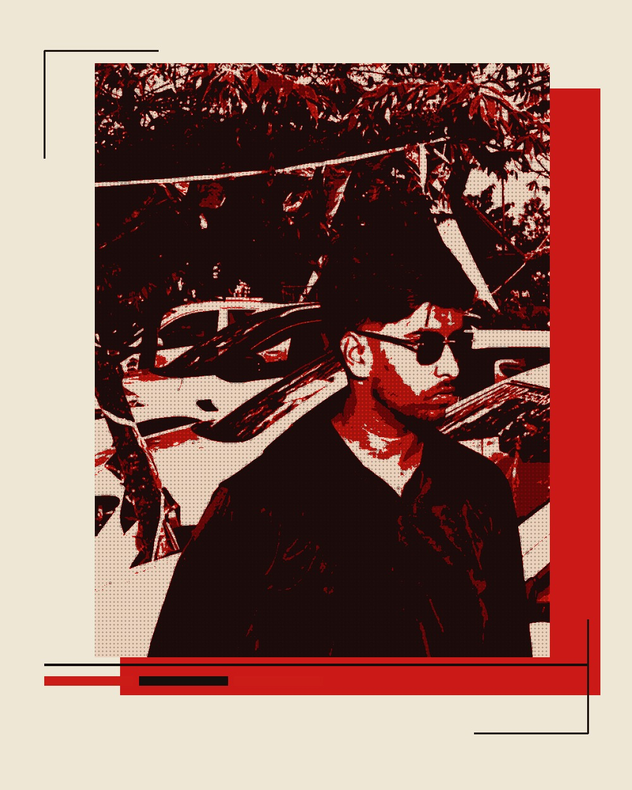

⌘ 01
AI / ML ENGINEERING STUDENT
SHAIKH
MOHAMMED
AYAN®
Building practical intelligence.
Exploring AI, automation & the systems between.
AYAN / 001AI ENGINEER IN THE MAKING

BUILD / TEST / ITERATEFIG. 01
OPEN TO
OPPORTUNITIES
OPPORTUNITIES
AI / ML
AUTOMATION
AUTOMATION
✳
THINK IN SYSTEMS ✳ BUILD WITH PURPOSE ✳ MAKE AI USEFUL ✳ THINK IN SYSTEMS ✳ BUILD WITH PURPOSE ✳ MAKE AI USEFUL ✳
01 / THE PERSONABOUT
A little context
CURIOUS BY
DEFAULT.
I'm an Artificial Intelligence & Machine Learning engineering student who likes turning ideas into useful, working systems.
My interests sit around practical machine learning, natural language processing, AI-powered applications and intelligent automation. I enjoy understanding a problem, breaking it into parts and building a clear path from concept to implementation.
Currently pursuing my B.E. at Yenepoya Institute of Technology, I’m developing my engineering fundamentals through academic work, collaborative builds and personal projects.
BASED IN MANGALURU, INDIA2023 — 2027
LEARN
BY
BUILDING✳
BY
BUILDING✳
02 / TOOLKITSKILLS & TECHNOLOGIES
Things I work with
THE TOOLBOX.
◈ 02
AI / MACHINE LEARNING
FIELD NOTES / 02▦ 03
DATA & LIBRARIES
FIELD NOTES / 03⌘ 04
TOOLS & WORKFLOW
FIELD NOTES / 04⌁ 05
PRACTICAL
FIELD NOTES / 05A PRACTICAL TOOLKIT — ALWAYS LEARNING, ALWAYS REFINING.
03 / SELECTED BUILDSPROJECT ARCHIVE
Ideas into implementation
WORK IN
PROGRESS.
A mix of academic builds, collaborative work and experiments in practical AI. Status is shown clearly — no imaginary demos, no inflated metrics.
01
A
AUDEXIFY
AI-powered web accessibility auditor
An AI-assisted web accessibility auditing application designed to surface common accessibility issues and turn technical findings into understandable insights.
BUILT ↗
02
AG
AGRISAKHI
AI-powered plant disease detection
An image-based plant disease identification application. The workflow focuses on crop-image preprocessing and machine-learning classification, with practical guidance for users.
BUILT ↗
03
FX
FIXFINDER AI
Local service discovery platform
An AI-assisted concept for helping people describe a local repair or service need and discover relevant professionals through structured requests and matching.
IN PROGRESS
04
CA
CITIZEN AI
AI-powered citizen assistance platform
A citizen-assistance platform concept focused on making public-service information easier to understand and navigate through conversational assistance.
UNDER DEVELOPMENT
05
HM
HACKATHON MANAGEMENT SYSTEM
Event and participant workflow platform
A collaborative application project to support the organisation of hackathon participants, project information and event workflows.
TEAM PROJECT
06
ER
ADAPTIVE EMAIL RESPONDER
Context-aware email drafting assistant
A personal automation project exploring how AI can classify incoming email, extract important context and prepare replies while keeping the user in control.
IN PROGRESS
04 / CREDENTIALSEDUCATION · CERTIFICATIONS
The foundation
LEARNING
NEVER
STOPS.
2023 — 2027 / KARNATAKA, INDIA
B.E. Artificial Intelligence
& Machine Learning
Yenepoya Institute of Technology, Moodabidri
7.16CURRENT CGPA
69%CLASS XII
72%CLASS X / SSLC
Verified learning
CERTIFICATIONS / 04
01
Oracle Cloud Infrastructure 2025 AI Foundations Associate
↗02
Microsoft Certified: Azure Fundamentals
↗03
MongoDB Certification
↗04
Rapid Development for AI (AI Services) — IBM
↗05 / OUTSIDE THE BUILDACTIVITY
Collaboration & curiosity
BUILT
BETTER TOGETHER.
Participated in TechFusion 2.0 at Dayananda Sagar College, Bangalore, contributing to a technical project as part of a team.
Interested in collaborative project development, hackathons and practical problem-solving across AI and application development.
TEAMWORK / EXPERIMENTATION / ITERATION✳
06 / MAKE CONTACTTHE NEXT CONVERSATION
Have a challenge in mind?
LET'S MAKE
IT USEFUL.
Open to internship opportunities, collaborative builds and conversations around practical AI.
START A CONVERSATION ↗